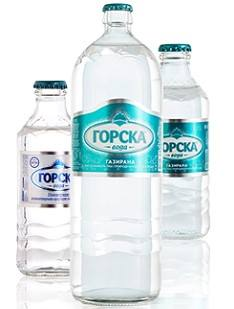

PRODUCTS

Groska Sparkling glass packaging 0.25l, Groska Sparkling glass packaging 1l Gorska has a special line of products in glass packaging indented for hotels, restaurants and cafes (HoReKa). Gorska still and sparkling water keeps its most important feature - that is the water quality - in this modern packaging also. With its refined look and best chemical structure, Gorska water in glass packaging adds value in the catering industry.